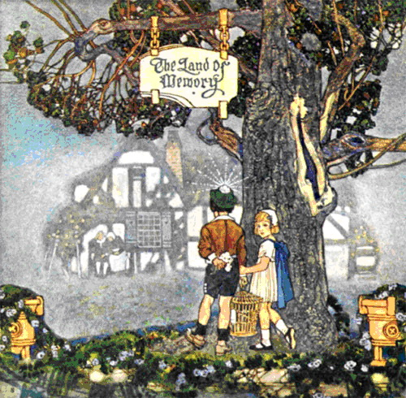

“Trên đường tối đêm khoả thân khiêu vũ
Kèn nhịp xa điệu múa Vô Luân
Run rẩy giao duyên khối nhạc trầm trầm
Hun hút gió nâng cầm ca nặng nhọc
Kiếp người tang tóc
Loạn lạc đòi nơi xương chất lên xương
Một nửa kêu than ma đói sa trường
Còn một nửa lang thang tìm khoái lạc…”.
(Trích: “Chiếc xe xác qua phường Dạ Lạc”)
Văn Cao: Viết văn, làm thơ, dựng kịch, soạn nhạc, vẽ. Sinh năm: 1922 tại Hải Phòng
Nhạc phẩm: Buồn tàn thu, Suối mơ, Bến Xuân, Trương Chi, Thiên thai, Sông Lô và nhiều ca khúc chiến đấu khác.
Văn Cao
Một tinh cầu giá lạnh
Dòng nước của đại dương luôn luôn đuổi nhau xoáy vào mỗi bờ cát, soi mòn chân đá, đắp dày từng lớp mặn chát trên mặt đất khô cằn quanh năm ẩm mốc váng muối và sình lầy. Cửa biển Hải Phòng với những ống khói đen sì nhấp nhô in lên nền trời, nhả từng vệt khói xám đậm vươn cao rồi vút biến vào lưng chừng mệt mỏi. Những nét mặt lem luốc tro than diễn hành từng chiều, rồi từng chiều trên các nẻo đường lở lói, đầy bụi và rác. Thân phận con người đeo đuổi, dính chặt vào tiếng còi thét ngất ngư từ một nhà máy hay tiếng động rầm rì, đều đều, của chiếc chân vịt cuốn sục sôi mặt nước. Con người sống trong cửa biển vật vã từng giờ, từng khắc, với lao khổ, tủi nhục và âm thầm bên cạnh vùng ánh sáng đàng điếm của giai cấp thống trị.
Cửa biển là nơi hẹn hò của những tay giang hồ hảo hớn, của bao thảm kịch đan kết thành dòng sống phức tạp, đớn đau. Cửa biển với vòm trời xanh thăm thẳm bồng bềnh, với từng phiến mây phiêu du vô định, với từng con nước dật dờ lôi cuốn số phận con người vào sự nổi trôi, mỗi lần nhổ neo tạm biệt bến bờ. Cửa biển với cơn cuồng nộ tới tấp của giông bão giữa mùa biển động làm vỡ nát ước mơ, làm tả tơi hy vọng.
Cửa biển tượng hình uất hận. Cửa biển than khóc. Cửa biển nghẹn ngào.
Văn Cao đã khóc tiếng đầu tiên để chào cửa biển Hải Phòng với ngần ấy gia tài. Văn Cao lớn lên và được dạy dỗ bằng nước mắt hơn là tiếng cười. Những khuôn mặt lem luốc của công xưởng, của hầm mỏ, của bến tàu đã khắc sâu vào tiềm thức, trở thành ám ảnh, dằn vặt khôn nguôi. Văn Cao đã sống với tiếng máy và thở cùng than bụi. Văn Cao đã biết đói, biết rét, biết đau khổ, trước khi làm người lớn. Vì thế, sự hiện diện của Văn Cao ở một hàng ngũ cách mạng nào đó trước năm 1945, người ta đừng lấy làm lạ, phải coi như một lẽ đương nhiên. Kẻ thù đã đẩy, chẳng riêng gì Văn Cao, mà cả dân tộc đứng lên đòi quyền sống.
Văn Cao là mẫu người đặc biệt. Với vóc dáng nhỏ nhắn. Với nụ cười lắng chìm không thành tiếng. Với hàm răng ngắn, đều. Với đôi mắt lạnh lùng dễ sợ lúc giận dữ, và dịu hiền khi tâm hồn chìm du vào dòng suy tưởng.
Văn Cao nhập cuộc không phải bằng tài năng đơn độc mà bằng một thác lũ nghệ thuật, chùm lấp vòm trời Kinh đô Văn nghệ. Từng bước khoảng khoát, Văn Cao hiên ngang đi vào lòng Mẹ Việt Nam và được tiếp nhận nồng hậu. Chưa ai nghĩ tới và tưởng tượng nổi một Văn Cao trước những đối nghịch lớn, chứa đựng cái vóc dáng khiêm nhượng ấy. Người ta có thể cho là huyền thoại khi nói về một Văn Cao vẽ giấy bạc giả để chi dùng trong khi hoạt động túng thiếu, đến lúc hành vi bị lộ, đã rút súng Colt 45 chĩa vào những người có mặt, bắt họ giữ nguyên vị trí, để mình rút lui, rồi sau ngày 19-8, mang giấy bạc thật đến hoàn lại số tiền đã trả bằng bạc giả với đôi lời xin lỗi. Cũng như ít ai biết tác giả Thiên thai, Trương Chi ở tổ chức ám sát nội thành Hà Nội dưới thời Nhật. Bị hoàn cảnh xã hội lúc đó đẩy vào con đường nghẽn, Văn Cao phải lao tìm một lối sống đặc biệt. Nhưng hôm nay tôi viết đến Văn Cao, không phải để đề cao điểm đặc biệt ấy, mà chính là để tìm hiểu Văn Cao ở khía cạnh Văn nghệ Tiền chiến và sự khuất chìm của một Văn Cao trong hiện tại.
Tâm hồn Văn Cao luôn luôn nghiêng về đau khổ. Văn Cao cố tìm cách tránh né nó bằng sự thoát du của trí tuệ. Trong mỗi sáng tác của Văn Cao tiền chiến, chúng ta nhìn thấy rõ quan niệm ấy ẩn nấp trong ca khúc Thiên thai, Trương Chi hoặc các đoản tác về nhạc cũng như văn thơ khác. Văn Cao lẩn trốn thực tại, một thực tại nhức nhối rã rời của cuộc sống phẫn nộ. Văn Cao tìm đến sự cứu rỗi linh hồn ở Lưu Nguyễn, ở tình yêu không phai tàn trong Sắc-Hương-Thiên-Giới, hay nỗi hờn ngàn kiếp giữa gã lái đò nghèo và cô gái đài trang. Chiếc chén tương tư đã tan thành nước và biến vào dòng suối đau buồn của cõi trần gian có từ khi trái đất hình thành. Văn Cao đã mượn hình thức cũ để nói lên tâm sự mình, một tâm sự chứa trọn vẹn nỗi bất bình xã hội. Nhưng đừng ai hiểu lầm Văn Cao đã sáng tác Trương Chi theo chiều hướng căm thù giai cấp. Trong nỗi bơ vơ của kiếp người, lớn lên với bao nhiêu cực nhọc, chịu thiếu thốn thường xuyên về cơm ăn, áo mặc, Văn Cao mong vượt thoát bằng sự ước mơ, bằng trở lui về quá khứ thơ mộng, bằng đam mê với suy tư trong ảo ảnh xa lìa. Văn Cao muốn tự giải thoát bằng sáng tác. Ở Văn Cao, mỗi lời thơ là một hạt ngọc, mỗi tiếng nhạc là mỗi sợi tơ, mỗi màu sắc là một vùng hào quang diễm lệ. Sự vượt lên của Văn Cao trong một thành phố đục lầm cát bụi, trong tiếng khua rộn ràng của những sợi dây xích sắt khổng lồ trong tiếng nấc nghẹn ngào không thoát khỏi cổ họng, được coi như cố gắng phi thường của một tâm hồn sung mãn. Đối nghịch đã làm cho Văn Cao trở thành con người có phong cách riêng biệt.
Văn Cao muốn tạo cho mình một thế giới êm dịu đầy mộng mơ tuổi trẻ, nhưng thực tại tàn nhẫn đã đập vào trí não Văn Cao từng hình ảnh đoạ đày, từng nỗi đau ngấm ngầm. Văn Cao dẫy dụa trong những giăng mắc đó như con cá biển cố vùng vẫy thoát khỏi mắt lưới, để đừng bao giờ thân xác bị moi ruột ướp muối đem phơi khô, rồi trở thành phân bón. Văn Cao giơ đôi bàn tay khoả lấp vùng lưu đày tuổi trẻ bằng nghệ thuật.
“Thiên thai, ánh trăng xanh mơ tan thành suối trần gian”.
Ôi, trần gian, trần gian nào đó, thứ trần gian chỉ được cấu tạo trong tưởng tượng mà Văn Cao cố víu lấy để thấy – ít nhất trong khoảnh khắc – kiếp người chưa hẳn đã chịu chết chìm trong u ngục, đói rét, áp bức. Nhưng trong cõi sâu thẳm hun hút của vũ trụ trên kia, Văn Cao vẫn cảm thấy và nhận ra niềm cô đơn dằng dặc của thân phận mình. Trong nhạc phẩm Trương Chi, Văn Cao không phải chỉ than van cho khối tình oan trái, không phải chỉ oán hờn định mệnh theo nghĩa hẹp hòi, cũng không phải chỉ là nói lên cái đẹp thuần tuý của thơ, nhạc; thực ra, Văn Cao đã “Ngồi đây ta gõ ván thuyền, Ta ca trái đất chỉ còn riêng ta”.
U uất bủa vây trùng trùng, điệp điệp làm Văn Cao ngỡ ngàng xoay quanh để kết đoàn. Niềm thống khổ như từng cơn sóng đại dương xô đuổi miên tục, phá phách đến tận đáy cùng thẳm của xã hội ung độc. Văn Cao buông rời cửa biển, gia nhập vào một không gian khác để mong tìm sự bình yên của tâm hồn. Nhưng dù đi đâu, đến đâu, thì hình ảnh của đói rét, khốn cùng vẫn nằm kề sa đoạ. Cửa Ồ Cầu Rền với xóm Dạ Lạc bốn mùa khai hội, từng đêm, tiếng sênh phách reo vui với xiêm y rực rỡ, với chuỗi tiền cười lạnh lẽo, vang dội vào khuôn gác nhỏ, không một ánh đèn, ánh nến, không cả tình thương. Trong khuôn gác nhỏ giữa xóm Vạn Thái, Văn Cao đã sống những ngày cuối cùng của tủi nhục, đã phải chấp nhận cái đau của những con người rời bỏ ruộng vườn, ngược dòng sông Hồng, lần theo đường sắt, qua các ngả đường, từ sau luỹ tre thân yêu, từ dưới mái nhà ấm cúng, từ chiếc sân gạch với hàng cau thẳng vút, đã kéo vào thành phố lũ lượt như lũ âm hồn dắt díu nhau đi đầu thai tập thể qua năm Cửa Ô Hà Nội.
Nhịp sống hờn tủi mỗi giờ, mỗi phút cứ xiết chặt lấy mỗi kiếp người đói rét. Gió dào dạt rức buốt da thịt. Gió đập gãy từng thể xác lả xuống mặt hè như cành khô rơi rụng. Không một lời trối trăn, không một giọt nước mắt. Trong cái phờ phạc của mùa đông Hà Nội, bóng những con quạ đen thui chập chờn lượn vòng, đe doạ. Từng đêm tiếng bánh xe lăn lọc cọc đi xuôi về cửa Ô. Ngọn đèn dầu đỏ loe loét lắc lư bên hông xe soi thấp thoáng những cẳng chân, cẳng tay đen đúa thò ra dưới manh chiếu nát. Vòng xe trôi, trôi mãi, đêm này qua đêm khác theo lộ trình định sẵn. Tiếng vó ngựa gieo rời rạc trong mưa phùn gió buốt, chen lẫn vào tiếng nói cười đàn ca rộn rã hắt ra từ hai lề dâm đãng.
Văn Cao đã từng đêm nhìn qua khuôn gác nhỏ, xóm Dạ Lạc mờ đục dưới ánh sáng bạc phếch của điện đường. Niềm xót thương dấy động tự chiều sâu của tâm ta và lòng oán thù thân phận lại đẩy mạnh Văn Cao vào hàng ngũ chống đối. Tất cả nỗi giận hờn đó Văn Cao đã giãi bày bằng những vần thơ đau thương nhất:
“Cửa Ô ơi, cửa Ô đau khổ
Bốn ngả âm u
Nhà ta thuê, mái gục tự mùa thu
Gác cô độc hướng về phường Dạ Lạc
Đêm đêm dãy đài canh tan tác
Bốn vực nhạc động vẫy người
Dãy đèn treo ánh đỏ quạnh máu đời
Ta về gác chiếu chăn gào tự tử
..............................
… Ngã tư nghiêng nghiêng xe xác
Đi vào ngõ khói Công Yên
Thấy bâng khuâng lối cỏ hư huyền
Hương nha phiến chập chờn mộng ảo
Bánh nghiến nhựa đường nghe xào xạo
Ai vạc xương đổ sọ xuống lòng xe
Chiếc quỷ xa qua bốn ngả ê chề
Chở vạn kiếp đi hoang ra khỏi vực…”
Tâm trạng Văn Cao ở thời gian đó không phải là tâm trạng của kẻ làm cách mạng tích cực mà chính là tâm trạng của nghệ sĩ với tất cả rung cảm chân thành. Nhìn thấy thảm trạng xã hội Văn Cao bi phẫn thét lên “Ta về gác chiếu chăn gào tự tử”. (Nhưng câu thơ này đến lúc được in trên tờ Tiền Phong lại đổi thành: “Ta về gác gió cài then cửa rú” có lẽ vì lý do nào đó hơn là tự ý tác giả). Văn Cao bị dồn ép, xô đẩy vào một ngõ cụt. Văn Cao vùng lên phá phách bằng nghệ thuật thấy chẳng ích gì, nên phải dấn thân vào ngả khác, chưa hẳn ngả ấy bây giờ đã hợp với tâm hồn và xoa dịu nỗi khắc khoải mà Văn Cao mang từ tuổi ấu thơ tới trưởng thành.
Với tài năng phong phú, Văn Cao không từ bỏ một hình thức nghệ thuật nào. Văn Cao vẽ, viết, làm nhạc và hoạt động cách mạng. Ở mỗi bộ môn Văn Cao đều xuất sắc.
Văn Cao gia nhập làng văn nghệ bằng một vài truyện và kịch ngắn đăng trong Tiểu thuyết thứ Bảy. Mấy sáng tác này hồi đó bị chìm đi trước những hào quang sáng chói của những vì tinh tú như Nhất Linh, Thạch Lam, Thế Lữ trong nhóm Tự Lực Văn Đoàn và Vũ Bằng, Thanh Châu, Ngọc Giao, Nguyễn Công Hoan, Bùi Hiển, Nam Cao, Tô Hoài trong nhóm Tân Dân. Thấy văn chương không thể đưa mình lên đỉnh cao nghệ thuật, Văn Cao rẽ sang âm nhạc. Tác phẩm Buồn tàn thu chào đời vào cuối năm 1943 gây một phản ứng tốt trong giới yêu nhạc. Lời và ý nhạc tuy chưa đạt so với những sáng tác sau đấy, nhưng nó là điềm báo trước một cái gì sẽ và sắp đến. Quả thực vậy, sau đó ít lâu nhạc phẩm Thiên Thai, Trương Chi, Suối mơ và Bến xuân ra đời gây một ảnh hưởng lớn đến tinh thần thưởng ngoạn âm thanh của giới trí thức Hà Nội.
Hai nhạc phẩm Suối mơ và Bến xuân, Văn Cao cùng sáng tác với Phạm Duy. Vì giá trị hiển nhiên, nhạc Văn Cao đã vượt thoát qua cửa ải được trấn giữ lâu ngày bởi Lê Thương, Đặng Thế Phong, Đoàn Chuẩn, Hoàng Quý v.v…
Cánh cửa vinh quang đã mở cho bước chân thứ nhất của con người tài hoa tuổi trẻ. Nền âm nhạc Việt Nam hồi đó chưa phát triển mạnh, chỉ có một vài tên tuổi và vài nhạc phẩm quá quen thuộc, trong đó nhạc phẩm của Đặng Thế Phong với Con thuyền không bến, Giọt mưa thu và Vạn cổ sầu là được ưa chuộng nhất. Nói cho đúng, những nhạc phẩm của Văn Cao quá mới và hay, so với thời gian lúc đó nhất là lời ca.
Nhà tôi bên chiếc cầu soi nước
Em đến tôi một lần
Bao lũ chim rừng họp đàn trên khắp bến xuân
Từng đôi rung cánh trắng ríu rít ca u ú ù u ú
Cành đào hoen nắng chan hoà…
… Tới đây, chân bước còn ngập ngừng
Mắt em như dáng thuyền soi nước
Tà áo em rung theo gió nhẹ thẹn thùng ngoài bến xuân…
… Tới đây, mây núi đồi chập chùng
Liễu dương hơ tóc vàng trong nắng
Gột áo phong sương du khách còn ngại ngùng nhìn bến xuân…
(Bến xuân)
Lời nhạc Văn Cao đặt như thơ, thật chọn lọc. “Mắt em như dáng thuyền soi nước” và “Liễu dương hơ tóc vàng trong nắng” là những hình ảnh quen thuộc của thi ca, chưa ai dùng để đặt lời cho nhạc. Tứ nhạc phong phú, nét nhạc thanh thoát dìu người thưởng thức đi vào cõi mộng êm đềm, quấn quít giữa sự giao duyên của thơ và nhạc. Nhưng chẳng phải chỉ có một lần mà hầu hết các nhạc phẩm của Văn Cao đều có lời đẹp và chất chứa cả một sức mạnh giông gió làm đổ vỡ những chướng ngại cản đường. Tôi nhớ mãi năm xưa, mỗi lần gặp nhà văn Vũ Bằng, nói chuyện về Văn Cao, Vũ quân nức nỏm khen bài Suối mơ hay quá, tuyệt quá, và cao hứng khẽ hát:
… Từng hẹn mùa xưa cùng xây nhà bên suối
Nghe suối róc rách trôi, hoa lừng hương gió ngát
Đàn ai đùa trong khóm lá vàng tươi…
(Suối mơ)
“Anh có đồng ý với tôi câu: Đàn ai đùa trong khóm lá vàng tươi là nhất không?”, Vũ quân nhìn tôi gay gắt.
Có nhiều người cho rằng Văn Cao sáng tác hai bài Suối mơ và Bến xuân tại chiến khu trong thế gian hoạt động bí mật, vì đó là hình ảnh của miền Cao-Bắc-Lạng với núi đồi, rừng, suối – không đúng hẳn, Văn Cao có hoạt động bí mật ở chiến khu, nhưng Văn Cao làm ra hai bài ấy ngay lòng Hải Phòng, cùng soạn với Phạm Duy, và chính Phạm Duy là người hát đầu tiên. Văn Cao làm nhạc do tự học, về sau mới thụ huấn nhạc lý ở lớp nhạc Tạ Phước. Văn Cao không hát được, tất cả mọi nhạc phẩm phổ biến gây được ảnh hưởng, phần lớn nhờ tài trình diễn của Phạm Duy.
Những nhạc phẩm của Văn Cao được xưng tụng rầm rộ sau ngày cách mạng ôm trọn nước Việt Nam – một phần cũng vì tác giả đã làm ra bài Tiến quân ca, bài ca chính thức của cách mạng. Từ “Chủ tịch” đến thứ dân đều phải đứng nghiêm trước nét nhạc trỗi lên. Trong khoảng thời gian này, Văn Cao đã vươn lên tới đỉnh chót của ân thưởng cho tài năng và công lao đối với cách mạng.
Ngoài văn thơ, âm nhạc, Văn Cao còn là hoạ sĩ có tài. Tất cả những nhạc phẩm do Văn Cao xuất bản, đều tự trình bày với những nét vẽ của hoạ phái Lập thể. Văn Cao sử dụng cọ và màu cũng sắc sảo mặn nồng không thua gì các hoạ sĩ chuyên nghiệp, có khi hơn nữa. Về hoạ Văn Cao có học một hai năm ở mỹ thuật Hà Nội với tư cách dự thính viên tự do (auditeur libre).
Văn Cao vẽ tranh sơn dầu cũng bằng hình thức và nội dung mới. Bức hoạ “Cuộc khiêu vũ của những người tự tử” (Le Bal aux suicidés) mà Văn Cao trưng bày tại Phòng Triển lãm Duy Nhất (Salon Unique 1943) đã làm giới mỹ thuật ngạc nhiên về bút pháp và màu sắc.
Văn Cao là một nghệ sĩ trên nghệ sĩ. Một mình ôm mấy vùng ánh sáng.
Tôi biết Văn Cao trước khi biết Phạm Duy, qua hội hoạ nhiều hơn. Mối tình giao bắt đầu giữa tôi và Văn Cao trong một căn nhà ở phố Hàm Long vào năm 1944 nhân một buổi xem tranh của nhau. Lúc đó Văn Cao đã “hoạt động”, tôi đâu biết. Trong số anh em có mặt, tôi chắc cũng chẳng ai ngờ con người nhỏ nhắn ấy lại có gan to, mật lớn.
Chúng tôi tranh luận về hội hoạ và phê bình tác phẩm của nhau, sau cùng chúng tôi đồng ý rằng, hội hoạ phải chuyển hướng không thể dùng để truyền thần sự vật. Bẵng đi một thời gian, tới cuối năm 1945 tôi mới gặp lại Văn Cao. Mối giao tình vẫn như xưa và quan niệm về hội hoạ của Văn Cao không thay đổi theo cách mạng. Văn Cao đã lấy vợ và hay lại nhà thi sĩ Hoàng Lộc (chết trên đường số 5 trong trận đánh vào cuối năm 1947), một căn gác rộng đối diện với dãy 24 gian, phố Huế. Lộc sống cùng với người anh. Cả hai độc thân, nên căn gác đã thành “quán tha hồ muôn khách đến”, thường dùng làm nơi họp mặt của anh em. Rồi thời gian cứ thế trôi đi, tới ngày toàn quốc kháng chiến 19-12-1946.
Đầu năm 1947, nhân chuyến lên Việt Bắc cùng Phạm Duy, tôi gặp Văn Cao ở Yên Bái, trong buổi chiều nắng tàn xuân thoi thóp trên đầu núi ngọn rừng, trên nỗi điêu tàn của một thành phố bắt đầu tiêu thổ! Chúng tôi ngồi trong quán ăn giữa trời. Bữa đó, tôi chứng kiến lần thứ nhất tài uống rượu của Văn Cao. Văn Cao uống hai chai đế, da mặt cứ tái đi và thái độ vẫn ung dung hoà nhã như chưa uống giọt nào. Lúc trước, tôi đã nghe nói về tửu lượng và sức hút thuốc phiện của Văn Cao. Theo anh em, Văn Cao có thể hút sáu, bảy mươi điếu liền trong một tối và uống tối thiểu một chai “Cổ nhát” sếch. Lúc vui, tôi hỏi. Văn xác nhận: “Đúng! – “Moa” uống và hút như thế đó, nhưng không nghiện thứ nào cả. Có cũng vui, không cũng chẳng sao!”. Nói xong, Văn cười, nụ cười không thành tiếng, tôi chỉ nhìn thấy hàm răng nhỏ trắng đều lấp lánh bên ánh đèn dầu lửa.
Rồi chúng tôi xa nhau. Sự chia tay trong thời gian kháng chiến thật ngậm ngùi vì không ai dám đoan chắc bao giờ gặp lại. Tôi quay về Âm Thượng, gia nhập một đoàn văn nghệ đi lang thang khắp núi rừng cho đến ngày cơn sốt rét ấn tôi nằm liệt giường, tôi trở về quê nhà tại Liên khu 3 để chữa bệnh.
Vào mùa đông năm 1948, mặt trận đang sôi động, quân Pháp đóng cách nơi tôi ở chừng 6 cây số theo đường chim bay, trên con đê Đặng Giang, suốt từ Vân Đình xuống làng Phù-Lưu-Tranh, bỗng một chiều Văn Cao và Nguyễn Đình Thi đến tìm tôi. Sau bữa cơm, trời bên ngoài đen như than, mưa phùn, gió bấc. Rặng tre trước nhà rung lên kẽo kẹt như tiếng nghiến răng. Gió luồn qua khe cửa thổi buốt tê da thịt. Văn và Thi tưởng chỉ sang thăm tôi rồi về làng bên ngủ nơi có cơ quan, không ngờ mải vui nên ở lại. Lên đèn được lúc lâu, lạnh quá, chúng tôi chui vào giường. Chiếc mền Mỹ mỏng teo làm chúng tôi rét không ngủ được. Văn Cao nằm giữa, ngâm bài thơ “Chiếc xe gác qua Phường Dạ Lạc”. Giọng ngâm làm da thịt tôi tê gợn. Nó âm u hơn cửa địa ngục. Nó rờn rợn như có ai đang cầm một miếng mảnh chai cạo vào chiếc lóng tre khô. Nó ai oán thê lương hơn một bãi sa trường sau giờ tác chiến. Nó thấm vào hồn mình như từng giọt cường toan. Tôi đang bị vây hãm bởi âm thanh ma quái đó, chợt nghe ngoài ngõ có tiếng chân đi rầm rập, rầm rập: đoàn quân đang di động ban đêm.
Khi tiếng ngâm vừa đứt, Nguyễn Đình Thi nhỏm dậy hỏi tôi, giờ này mua rượu ở đâu? Tôi nói đang chuyển quân ai cho mình đi! Thi lại nằm vật xuống. Cả đêm chúng tôi không ngủ, phần vì lạnh, phần thảo luận văn nghệ và nhắc kỷ niệm anh em.
Sang đầu năm 1949, Văn Cao và gia đình về Khu 3 ở tại làng Hoà Xá gần chợ Đại. Chúng tôi gặp nhau luôn và chính ở nơi này Văn Cao đã sáng tác nhiều nhạc phẩm trong đó có bản “Tiến về Hà Nội”. Văn Cao dạy hoạ sĩ Bùi Xuân Phái và tôi hát bài này trước tiên. Trong thời gian ở Liên khu 3, chúng tôi có tổ chức một cuộc Triển lãm Hội hoạ. Văn Cao bày một bức sơn dầu mang tựa đề “Cây đàn đỏ” vẽ người bộ đội ôm “Cây đàn chủ nghĩa”.
Triển lãm xong, Văn Cao nhờ tôi giữ giùm hoạ phẩm đó, nhưng sau quân Pháp đã lấy hết, cả tranh của tôi lẫn tranh Văn Cao, trong một cuộc hành quân càn quét vào đầu năm 1950. Từ đó, chúng tôi không một lần gặp lại nhau.
Tính ra đã 20 năm rồi. Tôi đứng bên này vĩ tuyến nhìn qua vòm trời Bến Hải, nhìn qua Đồng Hới, qua Vinh, Thanh Hóa, Nam Định, Phủ Lý rồi đến Hà Nội, nơi Văn Cao đang có mặt với vụ án Nhân văn - Giai phẩm, với kỷ luật tập thể giết dần Văn Cao, biến Văn Cao thành công cụ. Cái không khí “đỉnh cáo sáng tác” mà Văn Cao thèm khát đã trở thành nỗi ước mơ thật sự, ước mơ này chắc anh sẽ đem theo về cõi chết.
Dù sao, Văn Cao vẫn hiện diện trong tôi với hình dáng của một tinh cầu giá lạnh, với cô đơn dằng dặc ở cuối khung trời ngăn cách.
Trích thơ Văn Cao
Chiếc xe qua phường Dạ Lạc
Ngã tư nghiêng nghiêng đốm lửa
Chập chờn ảo hóa tà ma
Đôi dãy hồng lâu cửa mở phấn sa
Rũ rượi tóc những hình hài địa ngục
Lạnh ngắt tiếng ca nhi phách rục
Tình tang gõ nhịp khóc đàn sương
Áo thế hoa lả lướt lượn đêm trường
Từng mỹ thể rạc hơi đèn phù thế
Ta đi giữa đường dương thế
Bóng tối âm thầm rụng xuống chân cây
Chiếc xe ma chở vội một đêm gầy
Xác truỵ lạc gục bên thềm lá phủ
Ai hát khúc Thanh Xuân hờ ơi, phấn nữ
Thanh Xuân hờ Thanh Xuân
Bước gần ta bước nữa thêm gần
Khoảng giữa tuổi xuân nghe loạn trùng hút tuỷ
Ai huỷ đời trai trên tang trống nhỉ?
Hay ác thần gõ quác nạo mồ khuya
Đảo điên mê say thể phách chia lìa
Nghe reo mạnh chuỗi tiên cười lạnh lẽo
Tiền rơi, tiền rơi…
Chùm sao huyền diệu
Lấp lánh hằng hà gạo rơi tiền rơi
Ta lả nhìn cửa sổ mắt mờ rồi
Vàng mấy lá thừa đãi thây phủ chiều.
Ngã tư nghiêng nghiêng chia nẻo
Dặt dìu cung bậc âm dương
Tàn canh nhễ nhại mưa cô tịch
Đầm đia rả rích phương Đông
Mang mang thở dài hờn đất trích
Lưới thép trùng trùng khép cố đô
Cửa Ô đau khổ
Bốn ngả âm u
Nhà ta thuê mái gục tự mùa thu
Gác cô độc hướng về phường Dạ Lạc
Đêm đêm dãy dài canh tan tác
Bốn vực nhạc động vẫy người
Dãy đèn treo ánh đỏ quạnh máu đời
Ta về gác gió cài then cửa rú
Trên đường tối đêm khoả thân khiêu vũ
Kèn nhịp xa điệu múa Vô Luân
Run rẩy giao duyên khối nhạc trầm trầm
Hun hút gió nâng cầm ca nặng nhọc
Kiếp người tang tóc
Loạn lạc đòi nơi xương chất lên xương.
Một nửa kêu than ma đói sa trường
Còn một nửa lang thang tìm khoái lạc.
Ngã tư nghiêng nghiêng xe xác
Đi vào ngõ khói Công Yên
Thấy bâng khuâng lối cỏ hư huyền
Hương nha phiến chập chờn mộng ảo
Bánh nghiến nhựa đường nghe xào xạo
Ai vạc xương đổ sọ xuống lòng xe
Chiếc quỷ xa qua bốn ngả ê chề
Chở vạn kiếp đi hoang ra khỏi vực.
Mưa, mưa hằng thao thức
Trên phố lội đìu hiu
Mưa, mưa tràn trên vực
Hang tối gục tiêu điều
Mang linh hồn cô liêu
Tiếng xe càng ám ảnh
Tiếng xe dần xa lánh
Khi gà đầu Ô kêu.
(1945)
Những ngày báo hiệu mùa xuân
“Những ngày báo hiệu mùa Xuân” là một đoạn trong bài thơ dài “Những người trên cửa biển” của Văn Cao, in trong tập thơ của bốn người: Hoàng Cầm, Văn Cao, Trần Dần và Lê Đạt, do Nhà xuất bản Văn Nghệ phát hành.
Nước biển đổ vào quanh Hải Phòng ngày bão
Làng mạc bồng bềnh trời đất bềnh bồng
Ở những ngọn tre xác xơ mốc lên chất muối
Còn lại ít rơm khô của mái nhà trôi
Những mảnh lưới thuyền ai bay tan tác
Xe gạo ngày đêm từ Hải Phòng về các xóm
Chúng tôi đêm ngày vét nước nối đê
Tưới ngọt lại ruộng đồng, dựng lại từng thôn xóm
Tìm lại những nụ cười ở môi người sống sót
Lửa đỏ đêm đêm trên bãi biển bập bùng
Trong những ngày khó khăn chồng chất
Kẻ thù của chúng ta xuất hiện
Những con rồng đất khi đỏ khi xanh
Lẩn trong hàng ngũ
Những con bói cá
Đậu trên những chiếc dây buồm
Đang đo mực nước
Những con bạch tuộc
Bao nhiêu tay chân dìm chết một con người.
Đất nước đang lên da lên thịt
Đất nước còn đang nhỏ máu ngày ngày
Ta muốn gói cuộc đời gọn gàng như trái vải
Đã thấy loài sâu nằm tròn trong cuống
Chúng muốn những em nhỏ mới biết đi phải rụng
Mòn mỏi dần sức vỡ đất khai hoang
Làm rỗng những con người, lùi dần niềm hy vọng
Héo dần mầm sáng tạo, mất phẩm giá con người
Chúng nó ở bên ta, trong ta, lén lút
Đào rỗng từng kho tiền gạo, thuốc men
Tôi đã thấy từng mặt từng tên xâu chuỗi
Tôi sẽ vạch từng tên lên mặt
Hãy dừng lại
Những tên muốn ôm cây mùa xuân không cho mọc
Những tên muốn làm cây to chớ cớm mầm non
Con đường ta đi tự hào lực lượng
Con đường nước nguồn thành sông thành biển
Con đường ta đi tự hào duy nhất
Con đường đi trái đất quanh mặt trời…”
(Trích Tâm trạng của giới Văn nghệ ở miền Bắc, Mạc Đình soạn)